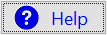
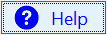
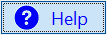

(text = false, command = false,
tabover = false, defaultButton = false, style = 0, tip = false, pad = false,
font = "", size = "", weight = "", textColor = false,
width = false, buttonWidth = false, buttonHeight = false,
italic = false, underline = false, strikeout = false,
image = false, mouseOverImage = false, mouseDownImage = false,
imageColor = false, mouseOverImageColor = false,
book = 'imagebook', mouseEffect = false, imagePadding = 0,
buttonStyle = false, classic = false)
EnhancedButtonControl is an enhanced ButtonControl so that you can configure text styles and display images.
When the button is pressed, it Send's the specified command. Your controller should implement this with an On_command method.
The image argument specifies the image to be displayed on the button normally.
The mouseOverImage argument specifies the image to be displayed on the button when the mouse is over the button.
The mouseDownImage argument specifies the image to be displayed on the button when the button is pressed.
The imageColor and mouseOverImageColor arguments specify the color of images to be painted (only work properly for black vector images)
The buttonWidth and buttonHeight arguments specify the size of the button in pixels. The width argument specify the width of the button in character numbers. If height is not specified explicitly, the button will use normal button's default height, If width is not specified, the button will scale the image based on its width/height ratio.
If there is no explicit height and width specified, the button will scale with DPI factors and keep being consistent with normal buttons automatically.
If the buttonStyle argument is true, the button will be able to get focus and its background color will be consistent with the normal button face. Otherwise, the background color will be the normal control color.
If the mouseEffect argument is true, the button will be highlighted when mouse over or mouse down. If the mouseEffect argument is true and the text is empty, the button will also do image shift when pressed.
The imagePadding argument controls the padding space around the image. The value specifies the percentage of width/height to be spared.
The book argument specifies the book the images are stored in.
The ImageControl is used to display the images.
NOTE: For the best quality at different screen resolutions, use vector images (EMF). The iconmonstr is a website providing a variety of free icons (in SVG format). Programs like Inkscape can convert SVG images into EMF format.
For example:
Button with only image and with buttonStyle false
EnhancedButtonControl(command: "test",
image: "cut.emf", imageColor: CLR.RED,
mouseOverImageColor: CLR.BLUE,
imagePadding: .15, mouseEffect:, buttonStyle: false)
Normally, the background color will be the normal color (lighter than button face):
When the mouse is over the button, a border will appear and the background color will change:
When the button is pressed, the background color will change darker and the image will shift a small distance
Button with both image and text and with buttonStyle true
EnhancedButtonControl(text: "Help", textColor: CLR.BLUE,
command: "test", image: "questionMark.emf",
imagePadding: .15, mouseEffect:, buttonStyle:)
Normally, the background color will be the normal button face color and the button can has focus
When the mouse is over the button, a border will appear and the background color will change:
When the button is pressed, the background color will change darker but there is no image shift:
